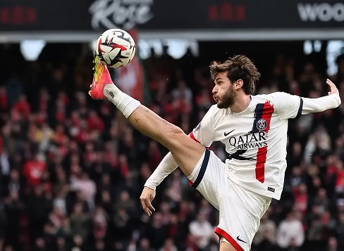

- Football is one of Georgia’s most popular sports. The Georgian Football Federation oversees the national
men’s, women’s, and futsal teams.
- The national men's team (nicknamed Jvarosnebi, or The Crusaders) made their debut at a major tournament
during UEFA Euro 2024, reaching the Round of 16 — a historic achievement.
- Willy Sagnol is the current head coach, with Guram Kashia as captain and the country's most-capped
player
